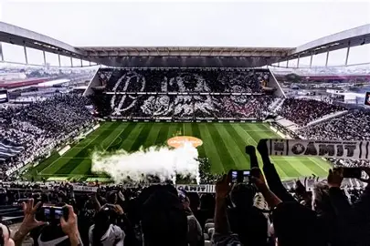
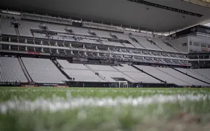

Fundado em 1° de setembro de 1910, no bairro de Bom Retiro, em São Paulo, o Corinthians nasceu com espirito popular. Ao longo de sua trajetoria, conquistou milhões de torcedores e se tornou um dos clubes mais tradicionais do Brasil. A idéia da fundação de um clube no Bom Retiro era assunto preferido dos funcionários da estrada de ferro São Paulo Railway e moradores, sem exceção do bairro. E isso começou a amadurecer quando Joaquim Ambrósio, Carlos Silva, Rafael Perrone, Antônio Pereira e Anselmo Correia foram juntos, assistir no campo do Velódromo a estrela do time inglês Corinthian (sem o s final) Team, na tarde de 31 de agosto de 1910.

Os ingleses derrotam a Associação Atlética das Palmeiras (nenhuma ligação com o Palestra Itália), por 2x0.
Voltaram do jogo maravilhados e com o pensamento mais forte na criação de um time de futebol no Bom Retiro.

Assim, às 20h30m do dia 1° de setembro, à luz do lampião de gás, altura do número 34 que iluminava a da Avenida dos Imigrantes (atual José Paulino), no Bom Retiro, treze pessoas sacramentaram a fundação do Sport Corinthians Paulista, eles se reuniram e redigiram o primeiro estatuto do clube. Faltava apenas financiamento para o sonho se realizar. Foi aí que Miguel Bataglia entrou em cena. Bataglia era um requintado alfaiate; aceitou participar e foi oficialmente nomeado o primeiro presidente.
O clube já tomava uma cara, mas faltava o nome. As idéias passaram por Santos Dummont, Carlos Gomes e até Guarani, mas nenhuma delas foi escolhida. Foi então que Joaquim Ambrósio sugeriu homenagear o famoso time inglês que fazia uma excursão pelo país: o Corinthian Football Club. O clube que se tornaria o mais querido do Brasil já tinha nome. A torcida e a imprensa chamavam a equipe de Corinthian’s Team. Assim, a letra "s" foi acrescentada ao nome, e o clube ganhou o elegante nome Corinthians.
Suas cores tradicionais são preto e branco. A garra, a superação e o apoio da Fiel fazem parte da Identidade alvinegra